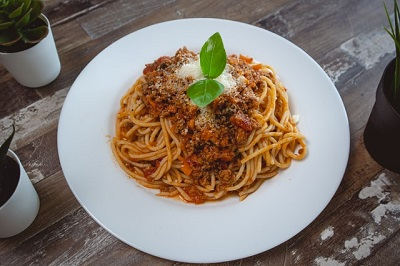

Spaghetti Bolognaise

Description
- sunflower oil
- 500g mince
- 1 onion, chopped
- 1 teaspoon crushed garlic
- 2 tomatoes, chopped
- 2 teaspoon sugar
- 1 packet of tomato paste
- 1 beef stock cube
- 1/4 teaspoon of Italian Herbs
- 500g spaghetti
- 4 cups of water
- 1/2 teaspoon salt
Steps
- In a pan, heat up the oil and fry the onions and garlic
- Add the mince to the pan and fry until brown
- Add the chopped tomatoes, tomato paste, sugar and a bit of water
- Cover with a lid and let it cook for 15 minutes
- After 15 minutes, add the beef stock and Italian herbs and let it cook for 10 minutes
- In a big pot, add 4 cups of water, salt and oil and leave it to boil
- Add the spaghetti to the boiling water and stir it to prevent it from sticking together
- Let the pasta cook according to the packaging instructions
- Drain the pasta in a colander and rinse with cold water
- Place the pasta in a dish and drizzle a bit of olive oil to prevent it from sticking
- Serve the pasta with the spaghetti sauce